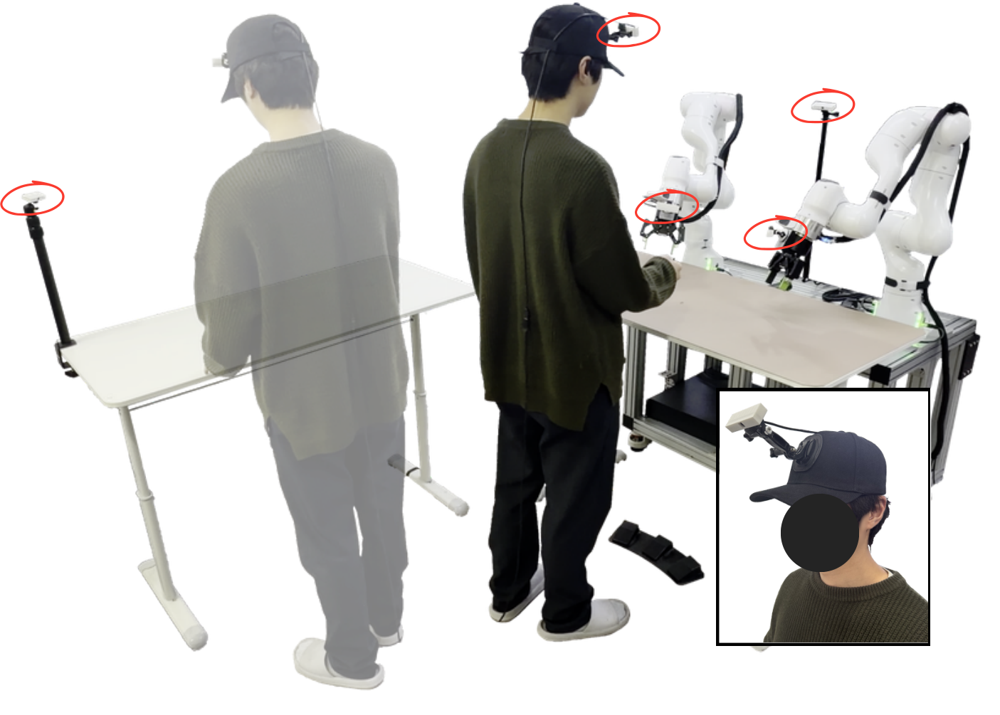
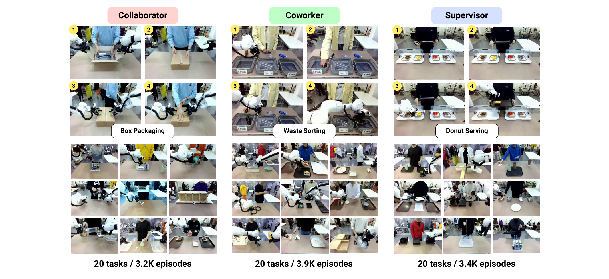
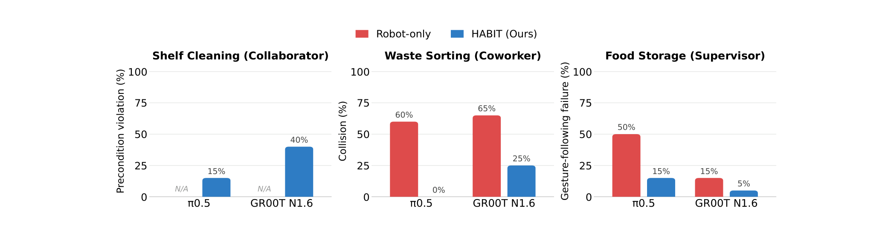
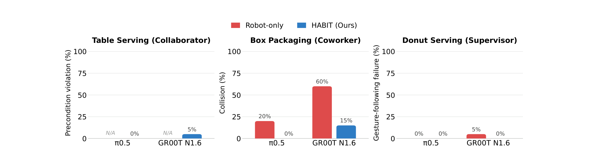
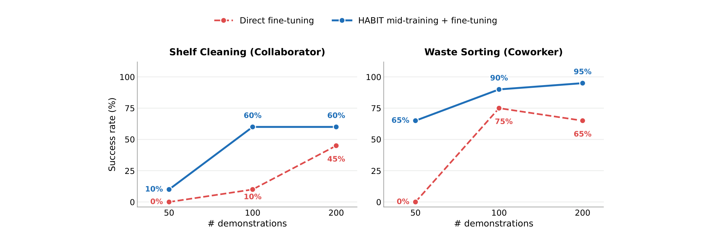

Real policy rollouts after training on HABIT, a large-scale dataset of robot manipulation demonstrations collected with a human sharing the workspace. The clips below are drawn from its 60 tasks, spanning all three human-robot interaction roles.
Existing robot manipulation datasets are collected in human-absent settings, so policies trained on them can perform a task in isolation but fail to act appropriately when a person is present.
HABIT closes this gap, with the goal of robot policies that can work alongside people.

Bimanual manipulation captured with two Franka Research 3 arms and five synchronized RGB cameras, with a human sharing the workspace in every episode.
Human-robot interaction takes many forms. To capture this diversity, we adopt three roles from the Human-Robot Interaction (HRI) literature, each defined by how the human and robot relate within a subtask.
The human and robot jointly accomplish a shared goal through direct physical interaction (e.g., handing over an object or jointly holding a bucket), and the robot must coordinate with the human both spatially and temporally.
The human and robot perform separate tasks while sharing only the workspace; the robot must avoid collisions with the human to ensure safety.
The human directs the robot through explicit cues such as gestures or demonstrated actions, and the robot must infer the human's intent from visual input alone.

A single instruction such as "clean the shelf together" is too ambiguous to elicit consistent demonstrations. So each task follows a task workflow: a directed graph of human (Hi) and robot (Ri) subtasks that fixes how the two agents divide and sequence the work.
A representative workflow per role, with the robot's and human's cameras in sync.
Plays through automatically — the highlighted subtask advances with the video. Click any node to jump to that step.
Table Service · Collaborator. The human and robot take turns; each subtask waits for the partner to finish the previous one.
Shelf Cleaning · Coworker. Two independent chains that share only the workspace.
Cup on Coaster · Supervisor. The robot reads the human's placement cue from vision alone.
The rule behind every HABIT recording: each robot action responds to a cue the cameras can actually see.
Because the robot operator knows the subtask sequence in advance, they could pre-execute the next subtask from memory rather than reacting to the human. For example, the robot operator might begin reaching toward a target object before the human ever points to it.
This quietly breaks learning: the cue that triggers the action then falls outside the camera input, so no policy could ever recover the behavior from the recorded data.
"Each operator acts only after directly observing the partner's behavior. We prohibit any coordination signal that is not captured in the recorded observations, so every demonstrated action is grounded in cues that are also available to the policy."
Reactivity alone does not guarantee the human-aware behavior we want, so the collection protocol adds three deliberate design choices.
Human safety is the overriding constraint. Whenever the robot is about to collide with the human or a human-held object, the robot operator decisively retracts the arms rather than continuing the trajectory, so yielding becomes the robot's default recorded response.
The human operator's movement speed is deliberately varied across episodes, so the data captures the robot adapting its pace to the human rather than moving at a single fixed cadence.
The risk is not that the robot follows words, but that it takes a shortcut and acts before the human has even pointed. So during collection, the human operator waits a random interval before gesturing, forcing the recorded behavior to depend on actually reading and grounding the gesture.
We fine-tune two open-source VLAs, π0.5 and GR00T N1.6, on a six-task subset. Training steps and batch size are held fixed, so the dataset is the only variable. Each number is the mean over 20 trials.
Higher is better. Collaborator tasks need a human partner, so Robot-only is not applicable.
Real policy rollouts on the four tasks that have a Robot-only baseline. Watch how the HABIT policy yields and follows the human where Robot-only does not.
Each role has a characteristic failure mode. HABIT instills the behaviors that human-absent data cannot teach.


Mid-training π0.5 on HABIT, then fine-tuning on a new task, beats fine-tuning from scratch at every data budget. HABIT transfers as a reusable prior for human-robot interaction.

TBD